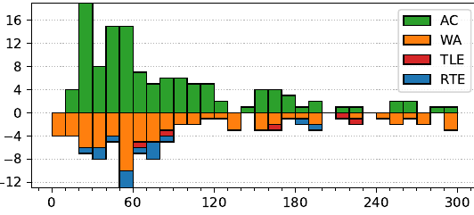

47th ICPC World Finals
Problem authors: Martin Kacer and Per Austrin
Solved by 120 teams.
First solved after 10 minutes.
Shortest team solution: 532 bytes.
Shortest judge solution: 347 bytes.

This was an easy interactive problem and there are many ways to solve it. A general observation for this type of problem (which is maybe a bit overkill for the present situation) is the following. Consider the 5 × 3 matrix
a11 a12 a13
A =
a21 a22 a23
a31 a32 a33
a41 a42 a43
a51 a52 a53
where the i'th row are the three numbers you give in your i'th question. Then, if any 3 rows of A are linearly independent, we can uniquely determine the correct answer. This is the case because if we remove one of the truthful answers, we will have an inconsistent system of equation, but if we remove the lie, then we will have a consistent overdetermined system of equations. In other words we can uniquely identify which answer is the lie, and then we can recover the correct answer using any three of the other answers.
Since we can choose A freely it is nicest to choose it in such a way that the answer is easy to recover, e.g.
A = 1 0 0
0 1 0
0 0 1
1 1 1
1 2 3
Note that we cannot change the last query to (1, 1, 2), because then the last three answers would be linearly dependent, and if one of he first two questions was a lie we would not be able to figure out which one of them was a lie. Similarly, (0, 1, 2) does not work as the last query, as then the second, third and last question are linearly dependent.